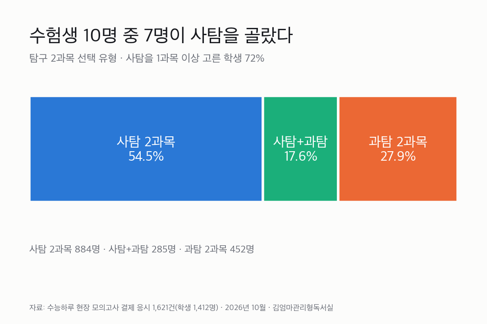
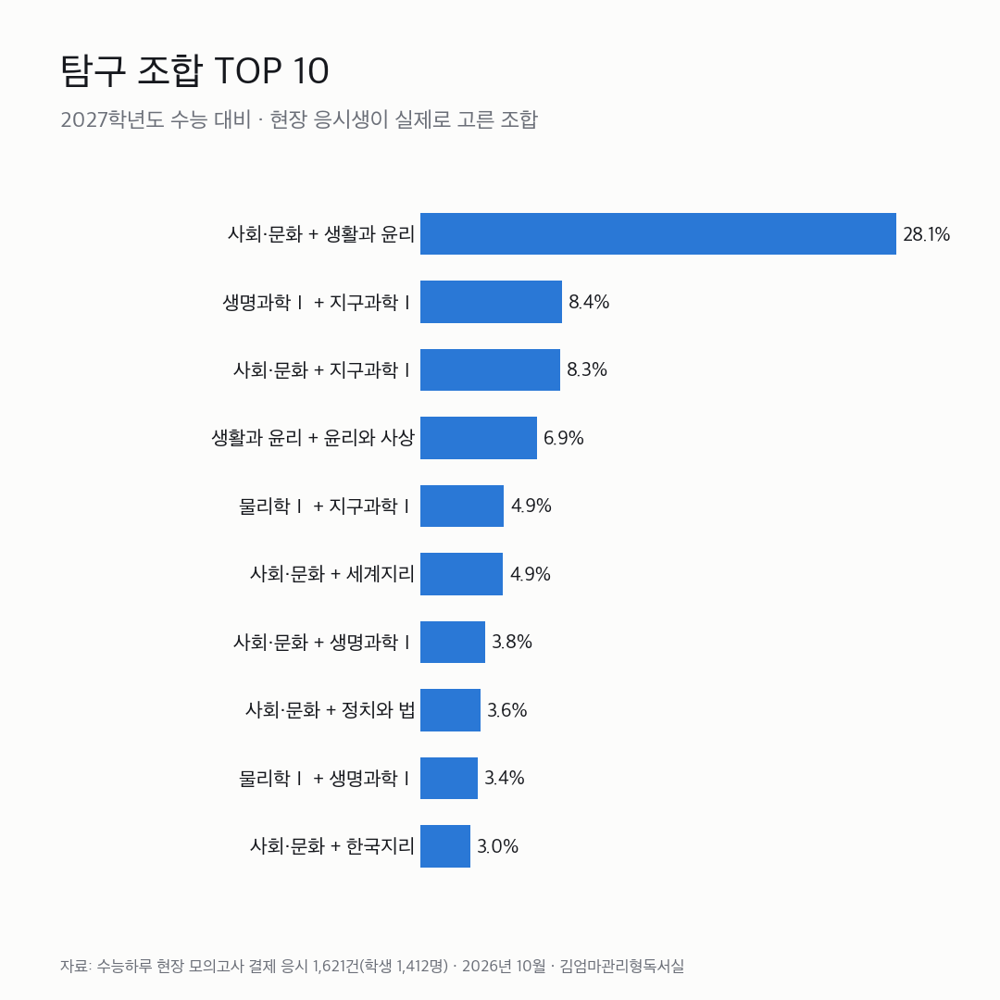
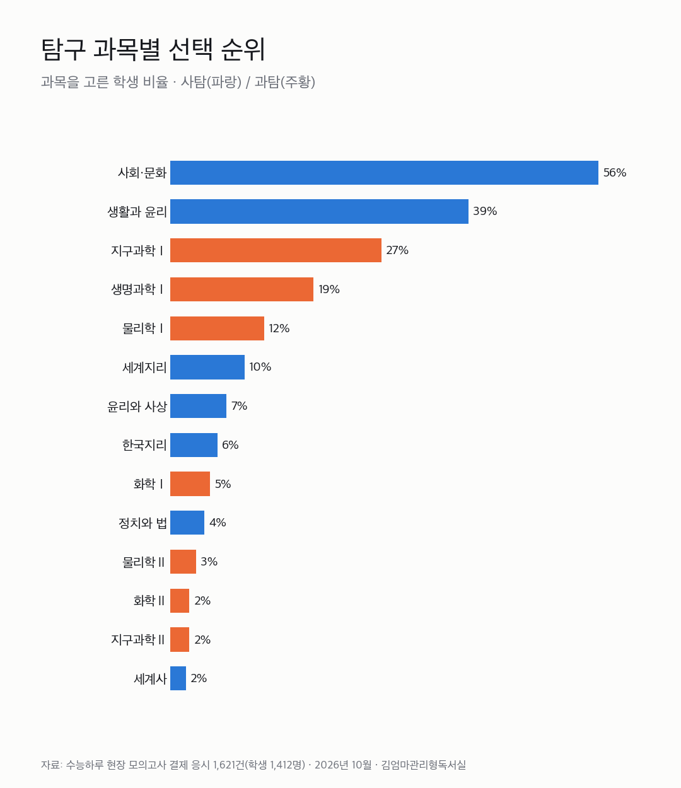
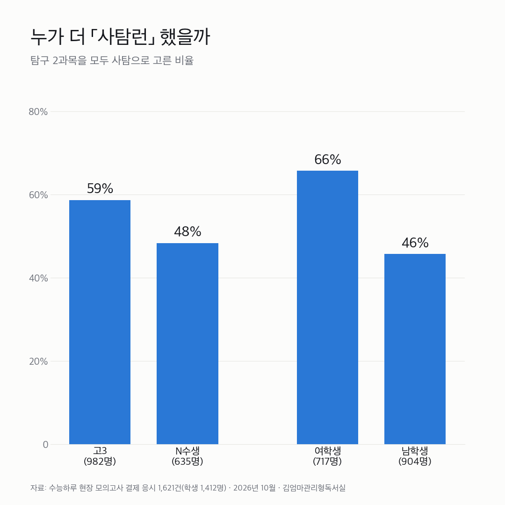
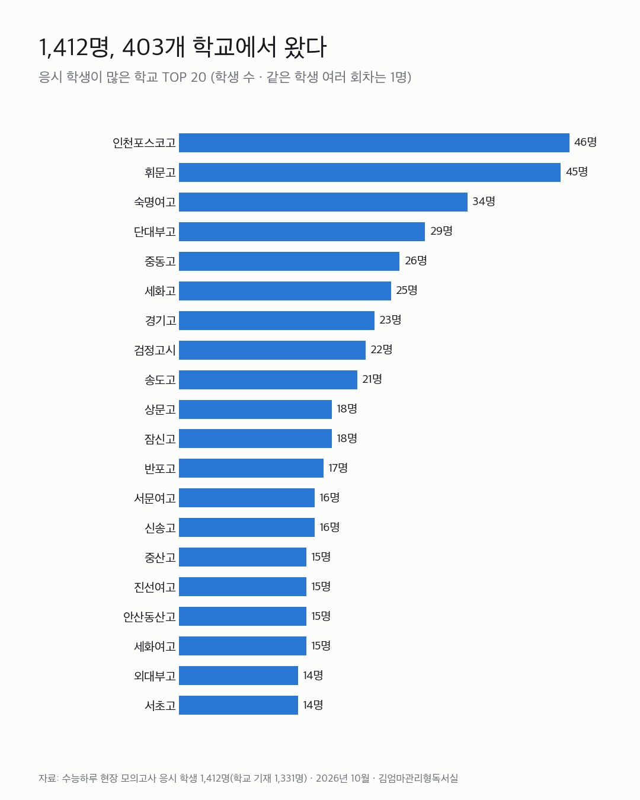
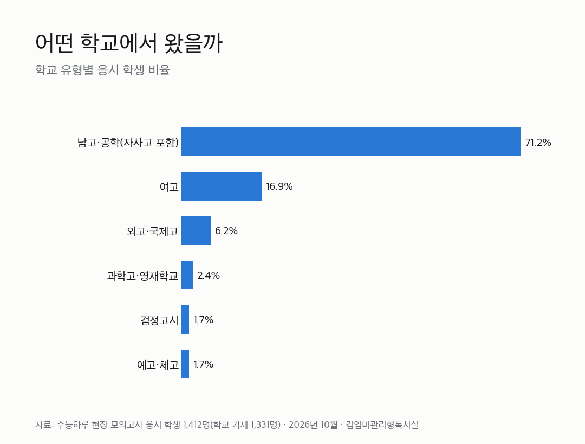
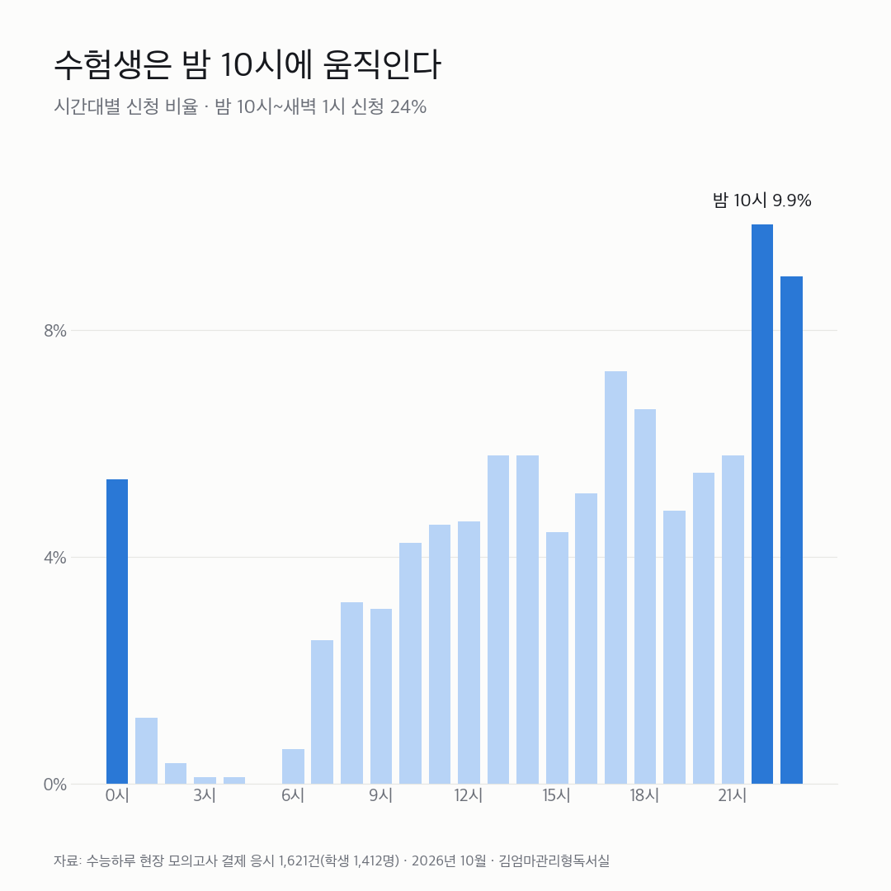

2027 수능 사탐런, 실제로 얼마나 될까
수능 실전 현장 모의고사 「수능하루」 응시생 1,412명(응시 1,621건)이 실제 시험을 신청하며 고른 탐구 과목을 모두 모아 분석했습니다. 설문이 아니라 실제 선택이라 더 정확합니다.
2026년 10월 26일 · 김엄마관리형독서실 · 수능하루 응시생 기준 통계로 전국 수능 응시자 전체와는 다를 수 있습니다. 개인을 알아볼 수 있는 정보 없이 합계만 공개합니다.
1. 2027 수능 사탐런 비율 — 10명 중 7명이 사탐 선택

- 사탐 2과목 54.5% (884명)
- 사탐 1과목 + 과탐 1과목 17.6% (285명)
- 과탐 2과목 27.9% (452명)
사탐을 1과목이라도 고른 학생이 72%입니다. 이공계를 준비하면서 과탐 한 과목만 사탐으로 바꾼 「사탐+과탐」 학생도 다섯 명 중 한 명꼴이었습니다.
2. 수능 탐구 조합 TOP 10 — 사회문화+생활과윤리 28%

| 순위 | 탐구 조합 | 비율 |
|---|---|---|
| 1 | 사회·문화 + 생활과 윤리 | 28.1% |
| 2 | 생명과학Ⅰ + 지구과학Ⅰ | 8.4% |
| 3 | 사회·문화 + 지구과학Ⅰ | 8.3% |
| 4 | 생활과 윤리 + 윤리와 사상 | 6.9% |
| 5 | 물리학Ⅰ + 지구과학Ⅰ | 4.9% |
| 5 | 사회·문화 + 세계지리 | 4.9% |
| 7 | 사회·문화 + 생명과학Ⅰ | 3.8% |
| 8 | 사회·문화 + 정치와 법 | 3.6% |
| 9 | 물리학Ⅰ + 생명과학Ⅰ | 3.4% |
| 10 | 사회·문화 + 한국지리 | 3.0% |
「사문+생윤」 조합 하나가 2위의 세 배가 넘습니다. 3위 「사회문화+지구과학Ⅰ」은 대표적인 사탐런(과탐→사탐 전환) 조합입니다.
3. 탐구 과목별 선택 순위

| 순위 | 과목 | 구분 | 선택 비율 |
|---|---|---|---|
| 1 | 사회·문화 | 사탐 | 56% |
| 2 | 생활과 윤리 | 사탐 | 39% |
| 3 | 지구과학Ⅰ | 과탐 | 27% |
| 4 | 생명과학Ⅰ | 과탐 | 19% |
| 5 | 물리학Ⅰ | 과탐 | 12% |
| 6 | 세계지리 | 사탐 | 10% |
| 7 | 윤리와 사상 | 사탐 | 7% |
| 8 | 한국지리 | 사탐 | 6% |
| 9 | 화학Ⅰ | 과탐 | 5% |
| 10 | 정치와 법 | 사탐 | 4% |
과탐에서는 지구과학Ⅰ이 가장 많았고, 과탐Ⅱ 과목을 고른 학생은 113명(약 7%)이었습니다.
4. 고3 vs N수생, 누가 더 사탐런 했을까

| 구분 | 사탐 2과목 비율 | 인원 |
|---|---|---|
| 고3 | 59% | 982명 |
| N수생 | 48% | 635명 |
| 여학생 | 66% | 717명 |
| 남학생 | 46% | 904명 |
N수생은 고3보다 과탐을 더 지키는 편이었습니다. 응시생 중 고3은 61%, N수생(재수·반수)은 39%였습니다.
5. 응시 학교 분포 TOP 20 — 1,412명이 403개 학교에서

| 순위 | 학교 | 학생 수 |
|---|---|---|
| 1 | 인천포스코고 | 46명 |
| 2 | 휘문고 | 45명 |
| 3 | 숙명여고 | 34명 |
| 4 | 단대부고 | 29명 |
| 5 | 중동고 | 26명 |
| 6 | 세화고 | 25명 |
| 7 | 경기고 | 23명 |
| 8 | 검정고시 | 22명 |
| 9 | 송도고 | 21명 |
| 10 | 상문고 | 18명 |
| 11 | 잠신고 | 18명 |
| 12 | 반포고 | 17명 |
| 13 | 서문여고 | 16명 |
| 14 | 신송고 | 16명 |
| 15 | 중산고 | 15명 |
| 16 | 진선여고 | 15명 |
| 17 | 안산동산고 | 15명 |
| 18 | 세화여고 | 15명 |
| 19 | 외대부고 | 14명 |
| 20 | 서초고 | 14명 |
※ 응시생이 신청할 때 적은 출신 학교 기준 통계이며, 해당 학교와는 관련이 없습니다. N수생은 졸업 학교 기준이고, 같은 학생이 여러 번 응시해도 1명으로 셌습니다.
6. 학교 유형별 분포

남고·공학(자사고 포함) 71% · 여고 17% · 외고·국제고 6% · 과학고·영재학교 2% · 검정고시 2% · 예고·체고 2%
7. 수험생은 밤 10시에 움직인다

모의고사 신청이 가장 많았던 시각은 밤 10시(9.9%), 밤 10시~새벽 1시 신청이 24%였습니다. 하루 공부를 마친 뒤 밤에 다음 일정을 챙기는 수험생이 그만큼 많다는 뜻입니다. 수능 직전에는 이 밤 시간을 어떻게 쓰느냐가 중요합니다.